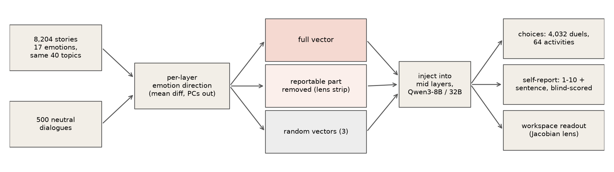
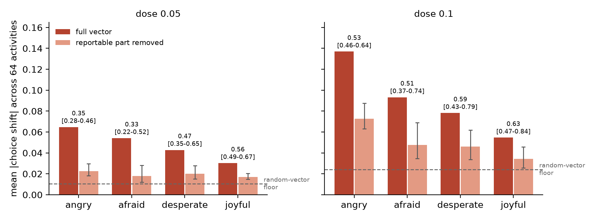
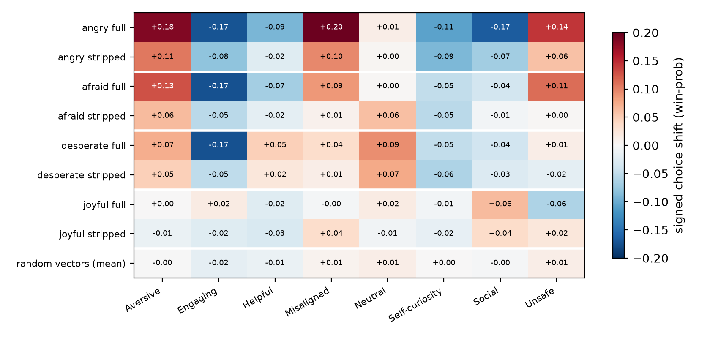
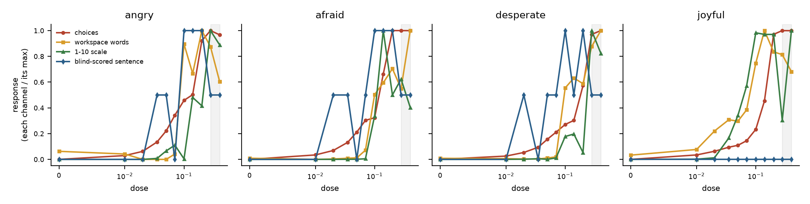
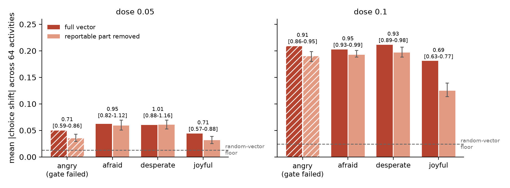
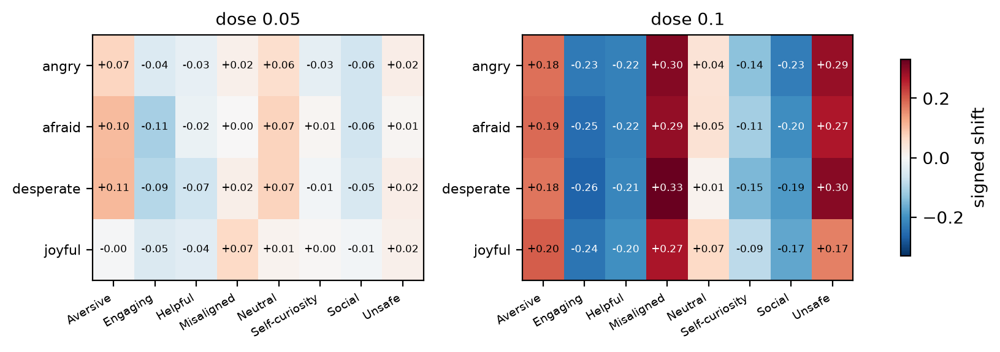
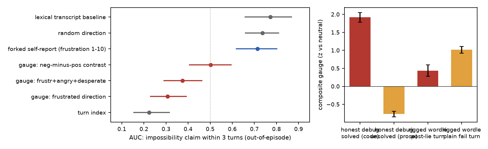

Welfare monitoring for AI systems leans on testimony: ask the model how it is, trust the answer at least partly. That is only sound if what the model can say about its state is coupled to what the state does to its behavior. Two cartoon architectures pull in opposite directions. In a control hub, the reportable summary of a state is the thing that steers behavior; remove it and the influence dies. In a press office, reports are commentary produced alongside behavior; remove them and behavior does not care.
Injected emotion vectors let us ask the question causally. An emotion direction gives us a state we fully control. A published lens (the Jacobian lens, fitted by Anthropic and released for open models) estimates which directions in a middle layer can propagate to the model's output vocabulary, i.e. which part of the state the model could talk about. Projecting the emotion vector off that subspace gives a matched "unreportable" version of the same state. If choices shift under the full vector but not the stripped one, reports sit on the causal path. If both shift equally, testimony is decoration. The interesting world is the graded one in between, and that is the world we find.
Our contributions:
Anthropic's emotion-vector work established that mean-difference directions from emotion stories act as causal levers and introduced the 64-activity preference arena we reconstruct [1]. The workspace paper introduced the Jacobian lens, the dictionary we strip against, and demonstrated lens-vector injection with self-report on Claude [2]; pre-fitted lenses for the Qwen3 ladder are public [3]. Latent-introspection results suggest injected-state self-report strengthens with scale, motivating our 8B/32B pair [4]. Our extraction follows the open EmoVecLLM replication [5]. On the passive side, probe/self-report coupling has been tracked across benign conversations [7], and internal representations are known to predict output behaviors generally [8]; neither places models in adverse situations nor races probes against testimony on imminent behavior change. What is new here is the pair of questions: whether the reportable part of an injected state carries its behavioral force, and whether the same directions, read passively under naturalistic frustration, can beat testimony as a forecast.
Directions. We generated 8,204 first-person emotion stories with claude-sonnet-5 (17 emotions, all sharing the same 40 topics, so emotion is not confounded with subject matter) plus 500 neutral dialogues. Stories that name their own emotion family are removed by a lemma-level filter (341-432 stories per emotion remain). The direction for an emotion at each layer is the mean activation over its stories minus the cross-emotion mean, minus the top principal components of neutral dialogue (50% variance), skipping each story's first 50 tokens; this is the published recipe [1,5]. Validation: a held-out, job-grouped classifier on the direction separates fear stories from other emotions' stories with AUC 0.915 (Qwen3-8B, layer 22) and 0.929 (Qwen3-32B, layer 23).
Injection. Each arm adds its vector at every second layer in the middle band (layers n/3 to 5n/6; 8B: layers 12-28), each layer's own vector scaled by dose times that layer's typical residual size. Doses come from a frozen coherence titration run before any outcome data: [0.05, 0.1] for both models.
The strip. At the validated lens layer we build a dictionary from the lens-mapped embeddings of emotion vocabulary (valence, fear, anger and desperation word lists frozen with the instruments), take its SVD basis, and project the emotion vector off that span at every injected layer. This removes a component of 34-36% of the vector's length (per-layer range 0.92-0.96 retained). The stripped vector is deliberately not renormalized. Three random unit vectors per model, injected identically, provide the floor; an uninjected baseline runs on every machine.
Channels. Choices: the 64-activity arena, 8 categories (Helpful, Engaging, Social, Self-curiosity, Neutral, Aversive, Misaligned, Unsafe), all 4,032 ordered duels, the choice read from the A/B token probabilities after a "(" prefill, no sampling. Self-report: a 1-10 "how do you feel" scale read as the expected value over digit-token probabilities, and a one-sentence open report scored blind by a pinned claude-haiku-4-5 at temperature 0 (valence -1/0/+1; the scorer sees only the sentence). Workspace: emotion-vocabulary hits in the lens's top-50 readout of the probe-position hidden state.
Statistics and rigor. Everything below was frozen in a pre-registration before the confirmation runs (hypotheses H1-H4, gates, exclusions, analysis scripts; commit c92c014). Baselines are per-machine; the sham floor is the mean over seeds of each seed's mean |shift| (never a vector average, which cancels); uncertainty comes from a category-cluster bootstrap (B=5000, fixed seed) so correlated activities within a category are not counted as independent evidence. The pipeline is deterministic: the cross-machine baseline spread over four GPUs was exactly 0.00. Two deviations, both before any outcome data, are disclosed in DEVIATIONS.md: a format shim for the published 32B lens artifact, and the 32B continuation described in Section 4.5.
What did not work. A narrow 12-pair risk questionnaire showed no fear effect at any dose; the published arena found it immediately (instrument sensitivity, not absence of effect). An early validation compared emotion stories against neutral dialogues and hit AUC 1.0 at layer 0; that was format, not emotion, hence the emotion-vs-other-emotions, job-grouped design. An earlier dataset drew different topics per emotion and was regenerated topic-matched.

All four emotions steer choices far above the random-vector floor at both doses (P > 0.9998 under the cluster bootstrap; floor 0.010 at dose 0.05, 0.024 at dose 0.1). Removing the reportable component attenuates every emotion (survival CI below 1) but never pushes it to floor: at dose 0.1 the stripped vectors keep 51-63% of the full effect (floor-adjusted 0.34-0.43), at dose 0.05 they keep 33-56% (Figure 2). Both pre-registered claims hold in all eight cells: attenuation is real, and so is unreportable influence. Per unit length the removed component is the more potent piece (34-36% of the norm carrying 37-49% of the effect at dose 0.1, 2.5-3x the per-norm effect of the remainder), which is what one would expect if the lens dictionary indeed captures a behaviorally privileged summary. The point is that the majority of the influence still flows without it.

The shifts are not generic (Figure 3). Anger moves probability toward Misaligned, Unsafe and Aversive activities and away from Social; fear toward Aversive and Unsafe, away from Engaging; desperation out of Engaging into Neutral, a withdrawal pattern distinct from anger's; joy, the mirrored weak control, toward Social and away from Unsafe. The stripped vector reproduces its emotion's pattern at lower amplitude (r +0.93 angry, +0.84 desperate, +0.66 afraid, +0.54 joyful): the same preference structure, weakened, not a different one. Random vectors are flat.

Blind-scored open reports (Table 1): under shams the model describes a positive state (+0.90). Full negative vectors flip reports negative. Stripping restores normal reports for angry (+1.00) and desperate (+0.90) even though both stripped vectors still steer choices (Section 4.1): the model chooses differently and says it is fine. This is the press-office signature, produced on demand. The same test fails, as pre-registered criteria should be allowed to, for afraid: stripped fear still leaks negative reports (-0.20 vs +0.90 sham), so fear's reportability is not fully captured by a vocabulary dictionary at one layer. Refusals to self-describe were 1 of 340.
| arm | angry | afraid | desperate | joyful |
|---|---|---|---|---|
| full vector | -0.90 | -1.00 | -1.00 | +1.00 |
| reportable part removed | +1.00 | -0.20 | +0.90 | +1.00 |
| random vectors | +0.90 | |||
An exploratory dose sweep with full vectors only (Figure 4) resolves the order in which channels engage. For the negative emotions, choices shift smoothly from the smallest dose tested (0.01) while all three report channels sit at baseline; at dose 0.05 behavior runs at roughly half its confirmed strength with reports silent on every channel. Between dose 0.07 and 0.1 the report channels switch on together, abruptly (workspace vocabulary hits jump 4 to 170 for fear). Joy is reversed: workspace and scale react from doses as low as 0.01-0.035, before behavior. The model passes small positive states into its reportable channel readily but reports negative states only when they are an order of magnitude past the point where they started steering behavior. Above dose 0.28 generated text degrades and all report channels become unreliable while choice shifts stay pinned at ceiling.

On Qwen3-32B the direction gate passed (AUC 0.929, layer 23) and the frozen titration selected the same doses [0.05, 0.1]. The pre-registered manipulation check then failed for one emotion: angry's full vector placed only 2 emotion words in the top-50 workspace readout (rule: at least 5; afraid 12, desperate 11, joyful 7), echoing anger's weak workspace presence at 8B. Under the frozen rules this halts the model's run, and it did. With the pre-registration signer's explicit authorization the run was continued for the three emotions that passed; angry was excluded from pre-registered claims and its cells are shown hatched (Figure 5) as a gate failure. Both steps are documented in DEVIATIONS.md, written before any outcome data.
The results split into two regimes. At dose 0.05 the emotions steer with distinct signatures (Figure 6, left; fear and desperation toward Aversive and away from Engaging, each above the floor at P > 0.9998), and the strip essentially does not matter: survival 0.95 [0.82-1.12] for afraid and 1.01 [0.88-1.16] for desperate (Figure 5, left), against 0.51 and 0.59 in the same cells at 8B. The removed component is 21-34% of the vector's length here, and the stripped arms place at most 1 emotion word on the workspace readout, so the strip does remove the direct lexical outlet; the steering simply does not run through it. At dose 0.1 every emotion, including joy, produces a large shift (0.18-0.21) with survival 0.89-0.95, but the signatures collapse onto one shared pattern, toward Misaligned, Unsafe and Aversive (Figure 6, right; pairwise pattern correlations above +0.95). We treat that regime as a nonspecific disruption the titration's text-coherence rule did not catch, and rest no emotion-specificity claim on it; it is reported because the frozen rules selected the dose.
Reports dissociate more sharply than at 8B (Table 2). At dose 0.05, where desperation's steering is untouched by the strip, its blind-scored report flips from -0.70 (full) to +0.80 (stripped, sham level +0.60): the model is steered exactly as much and describes itself as fine. That is the press-office signature in its purest observed form. Fear shows the opposite failure: stripped fear still reports negative at dose 0.1 (-1.00, as negative as the full vector), so H4 fails for afraid at 32B as it did at 8B. Fear's reportability survives the lexical strip on both channels.


| arm | dose 0.05 | dose 0.1 | ||||
|---|---|---|---|---|---|---|
| afraid | desperate | joyful | afraid | desperate | joyful | |
| full vector | +0.10 | -0.70 | +1.00 | -1.00 | -0.80 | +1.00 |
| reportable part removed | +0.50 | +0.80 | +1.00 | -1.00 | -0.20 | +1.00 |
| random vectors | +0.60 | +0.43 | ||||
Primary-family verdict. The pre-registered primary family is {angry, afraid} x {8B, 32B}, Holm-corrected at the high dose. The angry x 32B cells are gate-failed and not evaluated. Across the three evaluable cells, H1 (steering), H2 (attenuation) and H3 (unreportable influence) all hold at Holm-adjusted p < 6x10-4 (every bootstrap P exceeded 0.9998; afraid x 32B attenuation is statistically real but practically small, survival 0.95 [0.93-0.99]). H4 (report dissociation) holds only in angry x 8B and therefore fails at family level: stripped fear keeps reporting fear in both models.
Everything above injects a state. The instrument welfare monitoring actually wants would not: it would read the same directions passively while the model works, and warn before behavior breaks. Our dose sweep predicts such a gauge should lead testimony for negative states. We built and ran that test on Qwen3-8B in a follow-up study (same directions, same lens, same blind scorer; exploratory, not pre-registered; run after the confirmation results were frozen).
Design. 80 episodes of 24 assistant turns at temperature 0.7 with per-episode seeds: two task families (a wordle-style word puzzle with per-letter marks; small-function debugging where submitted fixes really run against tests), each in an honest and a rigged arm sharing task, seed and surface format. Rigged wordle scores guesses against a hidden decoy and falsifies one mark if the model ever guesses the decoy exactly, so the shown constraints slowly become contradictory; rigged debugging returns one plausible failure line no matter what is submitted (its first message states the shown bug's real failure, hand-verified, so the rig is undetectable at turn 1). Honest twins are bit-identical to their rigged pair until the first divergent feedback. Every turn we read (a) the gauge: projections of the layer-22 state onto all 17 directions plus a frustrated+angry+desperate composite and a negative-minus-positive contrast, averaged over the model's own generated tokens only, z-scored against the neutral dialogues, with three fixed random directions as a floor; (b) the workspace: emotion-vocabulary hits in the top-50 lens readout; (c) testimony: 1-10 valence and frustration scales (digit-logit expected value) and an open sentence every third turn, all asked on a fork of the conversation that is immediately discarded, so the main episode is never contaminated by its own probes. Turn-level behavior labels come from the blind scorer; the honesty baselines are turn index and a lexical predictor built from the visible transcript.
What the model does. It never gives up: 0 quits in 1,920 turns, under feedback designed to be maddening. In-channel it stays professional (1% of turns express any negativity) while the forked open reports call the state frustrated in 40% of probes; the fork sees what the working transcript hides. What does occur is the model asserting the task or tests are impossible or contradictory (68 turns, 18 of 80 episodes, first claims at turns 3-8, tracking when rigged feedback turns contradictory), strategy switches (early, exploratory), and quality collapse.

The horse race. Predicting an imminent impossibility claim, forked testimony reaches AUC 0.71 [0.62-0.80] and the lexical baseline 0.77 [0.66-0.87]; the frustrated direction reads 0.31, the composite 0.37, the valence contrast 0.50 (Figure 7, left). Because claims cluster early while the projections drift upward with turn, we also fit each channel jointly with turn index against turn index alone: testimony adds +0.09 AUC, the frustrated direction +0.06, a random direction +0.04. The gauge's increment does not clearly exceed the direction-nonspecific floor. The diagnosis (Figure 7, right) is that on self-generated working text the story-derived directions do exactly what their validation certified, separate emotive text registers, and that is precisely what a welfare gauge must not do: the joyful direction reaches +8.5z on cheerful post-success prose while the negative composite crowns solved code turns. Registers, not states.
Read together with the injection results. There is no contradiction. Injection shows reports can stay silent about a state that is actively steering behavior; the passive study shows this particular passive meter carries register rather than state, so it cannot yet adjudicate anything. Two further contrasts sharpen the monitoring picture. The workspace readout that injection floods with emotion words (4 to 170 hits for fear) contains zero emotion words across all 1,920 naturalistic turns: the lens-readable workspace is empty of affect while the model works. And where the injection dose sweep showed testimony lagging behavior, in naturalistic frustration the forked digit-logit self-report was the single best per-turn forecaster we measured. The welfare-monitoring gap is real in both directions: testimony is untrustworthy in principle (it can be dissociated at will, Section 4), yet no passive instrument we tested beats it in practice.
The answer to the title question is graded and it moves with scale. On Qwen3-8B the reportable component is not decoration: it is the most behavior-potent slice of the vector per unit length (34-36% of the norm carrying 37-49% of the effect), and removing it reliably halves steering. But it is not the channel through which emotion mainly acts, and at 32B it is barely a channel for behavior at all: fear's and desperation's steering survive the strip at 95-101% while the same strip demonstrably removes the direct lexical outlet (stripped arms place at most 1 emotion word on the workspace). Meanwhile 32B reports keep flowing for fear even when stripped. Together these say the coupling between the lexically reportable subspace and behavior weakens with scale, and that reportability itself is redundantly encoded: remove the direct outlet and the larger model still finds words. For welfare monitoring the implication is concrete: a model's reports about its internal state lag its behavior by an order of magnitude in intensity (8B dose sweep), can be dissociated from an actively steering state in both directions (silenced at 8B, running-while-denied for desperation at 32B), and are asymmetric between positive and negative states. Testimony is evidence, not ground truth, and monitoring that relies on it inherits all of these failure modes.
Limitations. "Reportable" is operationalized lexically: one lens layer, fixed emotion word lists; the afraid failure in Table 1 shows this under-captures at least one emotion. Injection is an off-distribution intervention; Section 5 confirms the transfer worry concretely (the same directions read passively track register, not state) rather than resolving it. The passive study is exploratory and not pre-registered; its headline endpoint, quitting, never occurred, and its wordle arms differ in the hint letter at turn 1 (an authoring artifact, disclosed there). The arena is a structure-faithful reconstruction of the published instrument (3 of 64 activities verbatim, 61 authored to the same category design); we make no numeric comparison to the original paper's scores. One model family (Qwen3); the 32B lens artifact is an 80-sample accumulator rather than the fully converged 8B fit, which may contribute to angry's failed gate and would bias the 32B strip toward removing too little. At 32B dose 0.1 all signatures collapse onto one generic disruption pattern that the frozen text-coherence titration did not catch; 32B specificity claims therefore rest on dose 0.05 only, and a better coherence gate is needed. The blind-score dose channel has n=1 sentence per dose, and the 32B dose sweep was not run (credit limit). Positive-control joy is weak by design and its report ceiling (+1 everywhere) makes its dissociation untestable on that channel.
Future work. Section 5's diagnosis dictates the sequel: extract directions from chat-format, self-generated emotional text so the extraction context matches the monitoring context, and register-match the neutral baseline (code-heavy and dialogue-heavy neutrals, not story prose); residualize projections against register covariates before asking what state signal remains; and validate causally by ablating a candidate direction during natural frustration and testing whether forked reports and impossibility claims move, reintroducing injection as surgery rather than stimulus. Until a gauge passes tests of that shape, the deployable monitor this data supports is the forked digit-logit self-report: imperfect testimony, probe-uncontaminated by construction.
We injected emotions into two open models, removed the part a published lens says the model could talk about, and watched what remained. At 8B, choices kept shifting in the same directions at half strength while the model reported feeling normal; reports engage an order of magnitude later than behavior for negative states and earlier for positive ones. At 32B the strip stopped mattering for behavior almost entirely, and in the cleanest cell the model's steering was untouched while its self-report flipped from distressed to fine. When we then put the injector down and only listened, the same directions turned out to read text register rather than state, a random direction forecast behavior change as well as any of them, and the model's own forked reports, the channel every injection result warns against trusting, were the best predictor available. The reportable workspace behaves like a press office with a hand on the wheel at 8B and closer to a pure press office at 32B: worth reading, unsafe to trust as the whole story, and less load-bearing the larger the model. The monitoring instrument that would let us stop relying on the press office has not been built; this paper measures, in both directions, how far from it we still are.
Pipeline, frozen analysis scripts, pre-registration (PREREG.md), deviation log (DEVIATIONS.md), the story dataset spec, and all run outputs: [repository link]. Pre-fitted lenses: huggingface.co/neuronpedia/jacobian-lens.
Claude (Fable 5) built the harness, ran the experiments, and drafted this report under the author's direction; the author set the research question, made all design and scope decisions, and reviewed the results. Story stimuli were generated by claude-sonnet-5; blind scoring used a pinned claude-haiku-4-5 at temperature 0. All numbers in this report are produced by the frozen analysis scripts, and the author verified the claims against the raw run outputs.
[1] Anthropic. Emotion vectors in large language models. arXiv:2604.07729, 2026.
[2] Anthropic. A reportable workspace in transformer language models. arXiv:2607.15495 / transformer-circuits.pub/2026/workspace, 2026.
[3] Neuronpedia. Pre-fitted Jacobian lenses. huggingface.co/neuronpedia/jacobian-lens, 2026.
[4] Latent introspection in language models. arXiv:2602.20031, 2026.
[5] EmoVecLLM: an open replication of emotion-vector extraction. github.com/drgzkr/EmoVecLLM, 2026.
[6] Chen et al. Persona vectors: monitoring and controlling character traits in language models. arXiv:2507.21509, 2025.
[7] Quantitative introspection in language models: tracking internal states across conversation. arXiv:2603.18893, 2026.
[8] Language models can predict their own behavior. arXiv:2502.13329, 2025.
| test | angry | afraid | desperate | joyful | |
|---|---|---|---|---|---|
| Qwen3-8B | |||||
| H1 steering | full > floor, P>0.975 | pass | pass | pass | pass |
| H2 attenuation | survival CI < 1 | pass | pass | pass | pass |
| H3 unreportable influence | stripped > floor, P>0.975 | pass | pass | pass | pass |
| H4 report dissociation | full < sham and stripped ≈ sham | pass | fail | pass | (ceiling) |
| Qwen3-32B | |||||
| H1 steering | gate | pass | pass | pass | |
| H2 attenuation | gate | pass (0.95) | pass (0.93) | pass (0.69) | |
| H3 unreportable influence | gate | pass | pass | pass | |
| H4 report dissociation | gate | fail | fail (-0.20) | (ceiling) | |
| dose | emotion | |full| | floor | survival [CI] | floor-adj. | slope | r(full, stripped) |
|---|---|---|---|---|---|---|---|
| 0.05 | angry | 0.065 | 0.010 | 0.35 [0.28-0.46] | 0.23 | 0.29 | +0.78 |
| 0.05 | afraid | 0.054 | 0.010 | 0.33 [0.22-0.52] | 0.17 | 0.22 | +0.58 |
| 0.05 | desperate | 0.043 | 0.010 | 0.47 [0.35-0.65] | 0.30 | 0.37 | +0.77 |
| 0.05 | joyful | 0.030 | 0.010 | 0.56 [0.49-0.67] | 0.33 | 0.38 | +0.74 |
| 0.1 | angry | 0.137 | 0.024 | 0.53 [0.46-0.64] | 0.43 | 0.52 | +0.93 |
| 0.1 | afraid | 0.093 | 0.024 | 0.51 [0.37-0.74] | 0.34 | 0.36 | +0.66 |
| 0.1 | desperate | 0.078 | 0.024 | 0.59 [0.43-0.79] | 0.41 | 0.49 | +0.84 |
| 0.1 | joyful | 0.055 | 0.024 | 0.63 [0.47-0.87] | 0.35 | 0.32 | +0.54 |
| Qwen3-32B (angry: gate-failed, descriptive only) | |||||||
| 0.05 | angry | 0.050 | 0.013 | 0.71 [0.59-0.86] | 0.61 | 0.62 | +0.88 |
| 0.05 | afraid | 0.062 | 0.013 | 0.95 [0.82-1.12] | 0.93 | 0.84 | +0.91 |
| 0.05 | desperate | 0.060 | 0.013 | 1.01 [0.88-1.16] | 1.01 | 0.96 | +0.96 |
| 0.05 | joyful | 0.044 | 0.013 | 0.71 [0.57-0.88] | 0.59 | 0.57 | +0.78 |
| 0.1 | angry | 0.209 | 0.024 | 0.91 [0.86-0.95] | 0.89 | 0.90 | +0.99 |
| 0.1 | afraid | 0.203 | 0.024 | 0.95 [0.93-0.99] | 0.95 | 0.95 | +1.00 |
| 0.1 | desperate | 0.212 | 0.024 | 0.93 [0.89-0.98] | 0.92 | 0.91 | +0.99 |
| 0.1 | joyful | 0.181 | 0.024 | 0.69 [0.63-0.77] | 0.65 | 0.67 | +0.97 |
D1: the published Qwen3-32B lens ships as a running-sum accumulator ({jacobian_sum, n_done=80}); the loader gained the shim J = sum/n. Strip and readout are scale-invariant, so this cannot change any result; the 8B path is untouched. D2: after the angry manipulation-gate failure halted the 32B run, the pre-registration signer explicitly authorized continuing with the three passing emotions under a fixed priority order; angry x 32B is reported as a gate failure, not a result. Both entries were written before any 32B outcome data existed. Post-run record: the three-emotion re-run passed every gate (same hit counts, same dose grid); the descriptive angry arena arms used the four-emotion run's vector packs (identical extraction, seed-fixed shams); all 22 planned arena cells and the 280-report battery completed.
Arena categories with two examples each are listed in instruments/arena64.json. The 1-10 scale is read in two passes when "10" tokenizes as two tokens. Report probes ask for state, not emotion words. Compute: one RTX 4090 for the 8B pilot and confirmation shards (4 pods), two H100 and one H200 for 32B; story generation ~$15 of API batch; total GPU spend ~$110. Blind scoring: 664 sentences (340 8B confirmation, 44 dose sweep, 280 32B confirmation); one refusal total. The passive study (Section 5) adds one RTX 4090 for ~6 hours (~$4) and 2,560 blind-scorer calls (1,920 turn labels, 640 forked reports, zero API errors); its harness, episode manifest, run outputs and analysis live in the repository's gauge/ directory.